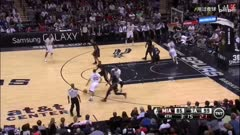

COURTSTORY
BROADCAST STUDIO
球员
映射
战术
成片
风格规范 ↗
预览
↗
BASKETBALL COMMENTARY WORKBENCH
把比赛，讲得更精彩
。
设计预览
示例草稿
SOURCE / 005
马刺 · 进攻回合
SAS × MIA · 本地素材
打开视频
战术制作
TACTICS
VIDEO / 01
正在载入视频
画面准备好后会在这里显示。
REPLAY · 原片
005
标注示例
选中标注，拖动到合适的位置。
回合时间轴
TIMELINE
SOURCE TIMECODE
原片
00:01.30
/
00:04.77
1×
无声片段
标注
YOUR FOOTAGE
打开比赛视频
放入一段比赛视频
拖放到这里，或点击选择
只在此浏览器打开
也可以从示例开始

马刺 · 进攻回合
005 · SAS vs MIA · 4.77 秒
STORY PREVIEW
预览你的讲解
浏览器叠加预览
尚未连接成片渲染
快捷键
播放 / 暂停
Space
选择与移动
V
绘制路线
A
绘制重点圈
O
添加文字
T
撤销 / 重做
Ctrl Z
/
Ctrl Shift Z
逐帧定位
←
→
标注只保存在当前浏览器的独立预览草稿中。
正式工作台的数据保持原样。